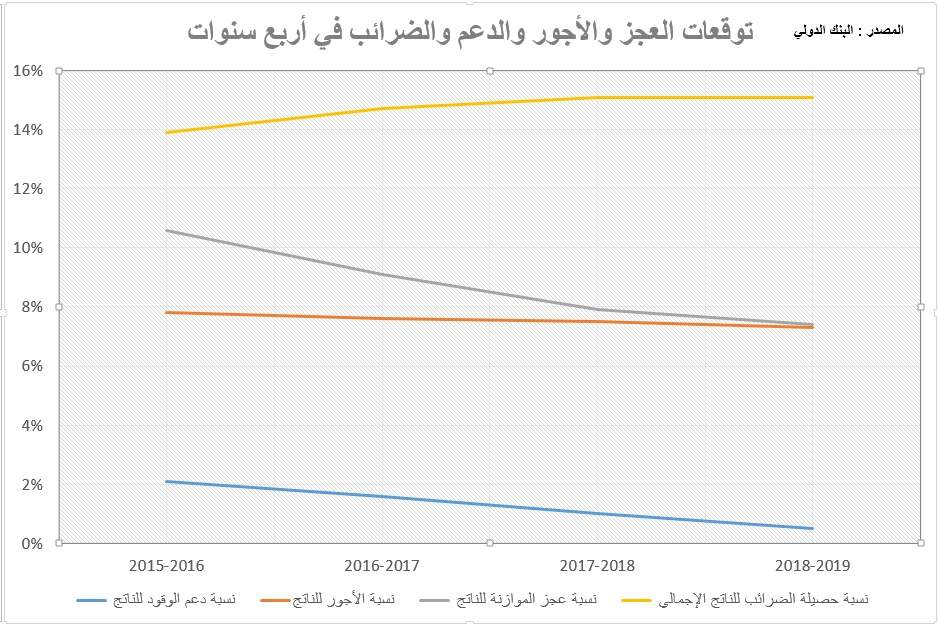

أحدث الأخبار
- القضاء الإداري يقضي بحل اتحاد الكرة وبطلان الانتخابات الأخيرة
- مقتل 3 أشخاص وإصابة 3 آخرين في حادث مروري بالبحيرة
- وزير الخارجية يجري اتصالاً مع رئيس المجلس الرئاسي الليبي
- عاصمة مصر تتجه لزيادة سكانية نصف مليون العام الجاري
- باولو يقود هجوم الزمالك أمام رينجرز في دوري الأبطال
- المالية تعفي المطاعم غير السياحية من ضريبة القيمة المضافة بشروط
- "القضاء الإداري" يلزم الجامعة الأمريكية بتحصيل مصروفاتها بالجنيه المصري
- البورصة ترتفع بنسبة 0.52% في نهاية التعاملات
البنك الدولي: الوضع السياسي سيختبر قدرة مصر على الإصلاح الاقتصادي
مبني البنك الدولي صورة من الموقع الرسمي للبنك
- وثيقة قرض البنك تحلل واقع الاقتصاد المصري وتوقعاته المستقبلية
- مصر نجحت في جذب استثمارات جديدة في الطاقة لكن 75% من مكوناتها مستوردة
- نقص العملة أدى لتدهور ثقة الاستثمار الأجنبي في نهاية العام الماضي
- حادث الطائرة الروسية يتسبب في خسارة مصر عائدات بـ3.3 مليار دولار هذا العام
- اقتراض البنوك من جهات خارجية بلغ مستوى قياسيا في العام الماضي
- إجراءات الإصلاح المالي ستقلل من قدرة الحكومة على تخفيض التضخم
كتب: محمد جاد
يعتبر البنك الدولي أن حزمة الإصلاحات الاقتصادية التي اتفق عليها مع الحكومة، تحت مظلة قرض بثلاثة مليارات دولار، هي الوسيلة المتاحة لتخفيف المخاطر المستقبلية المحدقة بالاقتصاد المصري. وبغض النظر عن الجدل الذي دار حول تلك الإصلاحات بين مؤيدين ومعارضين لها، فإن تحليل البنك لوضع الاقتصاد المصري، والذي ورد في وثيقة القرض، يكشف الكثير من التفاصيل عن حجم الضغوط القوية التي يعيشها، والسيناريوهات المستقبلية التي تنتظره.
الضغوط مستمرة على الأجل المتوسط
لا ينسى الكثير من المصريين الأجواء الاحتفالية التي طغت على تنظيم مؤتمر شرم الشيخ الاقتصادي في مارس الماضي، وحجم صفقات الاستثمار الأجنبي الضخمة التي تناقلتها وسائل الإعلام آنذاك، واعتبرها البعض بداية لانفراج أزمة تراجع التدفقات الاستثمارية الخارجية والتي انعكست بشكل واضح على تراجع احتياطات مصر من النقد الأجنبي بشكل قوي منذ 2011.
إلا أن وثيقة قرض البنك الدولي لمصر، الذي تبلغ الشريحة الأولى منه مليار دولار، قالت بشكل صريح، في سياق تحليلها لوضع الاقتصاد وتوقعاتها لمستقبله، إن "الموازين الخارجية لمصر ستكون تحت ضغط على الأجل المتوسط"، بالرغم من الصفقات الاستثمارية التي تم الاتفاق عليها في الربيع الماضي.
وتتحدث الوثيقة بشكل أكثر تفصيلا في هذا السياق حول واحد من أضخم قطاعات الاستثمار الأجنبي وهو قطاع النفط، إذ تشير إلى أن مصر عقدت اتفاقات استثمارية في هذا المجال تتراوح قيمتها بين 36-38 مليار دولار.
لكن البنك قال أنه لا يأخذ في حساب توقعاته إلا الاستثمارات المؤكد تطبيقها خلال الأربع سنوات المقبلة فقط، كما أنه يضع في اعتباره أيضا الزيادة المتوقعة في الواردات المصرية، وبتطبيق تلك الفرضيات فإن التحسن المتوقع في الاستثمار الأجنبي خلال أربع سنوات مالية، تبدأ من العام الجاري، "سيكون له تأثير محدود على صافي ميزان المدفوعات".
ويوضح البنك في هوامش الوثيقة أن التدفقات التي ستدخل مصر كاستثمارات في الطاقة خلال الأربع سنوات المقبلة سيكون 75% منها عبارة عن مكونات مستوردة (تدفقات للخارج) مما يقلل من تأثيرها على ميزان المدفوعات.
واستطاع الاقتصاد المصري أن يجذب شركات بترول أجنبية لتعلن في العام الماضي عن استثمارات جديدة في البلاد، بعد أن رفعت الدولة السعر الذي تشتري به البترول والغاز من الشركات الأجنبية العاملة بالقطاع، إلا أن البنك الدولي توقع أن يشهد عجز بين الواردات والصادرات البترولية قفزة في السنوات المقبلة.
ومع سماح الحكومة للشركات الخاصة باستيراد الطاقة من الخارج لتشغيل الماكينات المتوقفة تتوقع المؤسسة الدولية أن يرتفع عجز الميزان التجاري البترولي من 0.8 مليار دولار في 2014-2015 إلى 3.7 مليار، ويستمر على هذه المعدلات المرتفعة خلال العامين التاليين ليصل إلى 3.9 مليار و3.4 مليار دولار على التوالي.
كانت تلك أحد ملامح توقعات البنك لطبيعة الضغوط التي تنتظر الاقتصاد المصري بالرغم من بعض المؤشرات الإيجابية كالكشف البترولي الضخم في البحر المتوسط الذي أعلنته شركة إيني الايطالية العام الماضي، والذي تتوقع المؤسسة الدولية أن يساهم في تحويل الميزان التجاري البترولي للبلاد إلى الفائض ولكن في العام المالي 2018-2019.
كيف بدأت الأزمة في مصر
يتخذ البنك الدولي من أحداث الثورة المصرية نقطة انطلاق لتحليل الوضع الاقتصادي الراهن، حيث ساهمت الاضطرابات التي تلت 2011 في قيادة الاقتصاد لمسار من التباطوء، في انخفاض متوسط النمو من 6.2% خلال الفترة من 2005/2006 حتى 2009/2010، إلى 2.1% خلال الفترة من 2010/2011 حتى 2013/2014.
وتفاقمت البطالة مع تزايد التباطوء الاقتصادي عقب الثورة، حيث بلغت 13.4% من قوة العمل بنهاية 2013/2014، بزيادة 4 نقاط مئوية تقريبا عن معدلها قبل التراجع الاقتصادي الذي بدأ في 2010/2011.
وبينما كان الاقتصاد متعطشا لاستعادة وتيرة النمو التي بدأت مع عودة الاستقرار السياسي نسبيا في 2014/2015، فقد تكالبت العديد من العوامل لتقويض هذا التعافي الهش، لتنخفض توقعات البنك للنمو في العام المالي الجاري إلى 3.8% مقابل 4.2% في العام السابق.
ويظهر تحليل البنك أن محاولات الاقتصاد للانتعاش مجددا بعد نحو خمس سنوات من الثورة، اصطدمت بالعديد من العراقيل، حيث يقول إن الموازين الخارجية لمصر كانت بدأت تتحسن في 2014/2015 مع ارتفاع الاستثمار الأجنبي وتعافي السياحة ونجاح طرح السندات الدولارية في السوق الخارجي. لكن الضغوط عادت للتزايد في العام المالي الجاري لأسباب تشمل ضخامة مدفوعات الديون المستحقة على الحكومة، وحادث سقوط الطائرة الروسية في سيناء.
ويقدر البنك أن حادث سيناء سيخفض عدد السياح في العام المالي الجاري بـ25% ويقلل عائدات السياحة بـ3.3 مليار دولار.
ويقدر البنك المركزي المصري أن الدين الخارجي بلغ 46.1 مليار دولار في نهاية سبتمبر الماضي.

معضلة توفير الدولارت تؤثر على الاقتصاد
وفي ظل ضغوط توفير النقد الأجنبي، تظهر العديد من المؤشرات التي يعرضها البنك انعكاس تلك الضغوط على الاقتصاد، حيث يقول البنك إن حجم اقتراض البنوك في مصر من الجهات الخارجية في 2014/2015 بلغ مستوى قياسيا، أكثر من 3 مليارات دولار، وهو ما يعد مؤشرا على ارتفاع حجم الطلب على العملات الأجنبية بما لا يتناسب مع المتاح منها محليا.
كما يعرض البنك مؤشرا عن الأصول بالعملة الأجنبية التي يستحوذ عليها الأفراد والشركات في الخارج ويوضح أن قيمتها تضاعفت في 2014/2015 مقارنة بمتوسط قيمتها في الفترة من 2010/2011 إلى 2013/2014، واستخدم البنك هذا المؤشر في سياق حديثه عن تأثير أزمة الدولار وصعوبة حركة رؤوس الأموال وتراجع الثقة.
ويدلل البنك على تأثير أزمة العملة الصعبة على الاستثمار الأجنبي، بأن "تدهور الثقة والذي يرجع إلى عدم كفاية إتاحة النقد الأجنبي و/ أو تأخر أو عدم القدرة على تحويل الأرباح للخارج"، يفسر تراجع صافي الاستثمار الأجنبي المباشر في الربع الأخير من العام المالي السابق لأقل مستوياته في ثلاث سنوات.
ويتعرض البنك أيضا لتأثير أزمة النقد الأجنبي على المصدرين المحليين، في ظل عدم تمكنهم من استيراد مدخدلات الإنتاج الكافية، وتقول الوثيقة إن مؤشر عدد المصدرين الجدد بالنسبة للحاليين بلغ في المتوسط 3% خلال 2015، مقابل 17% في 2012.
التأثيرات الاجتماعية للإصلاحات المتوقعة
يتحدث البنك عن التضخم كعنصر مثير للقلق، حيث بلغ متوسطه في 2014/2015 نحو 11%، بزيادة 1% عن العام السابق، وهو ما أرجعه البنك جزئيا لإجراءات حكومية لإصلاح الوضع المالي، شملت رفع أسعار الوقود وزيادة الضرائب وتخفيض قيمة الجنيه مقابل الدولار، بالإضافة إلى عيوب نظام توزيع السلع في السوق المحلي.
وكانت الحكومة قد زادت من ضرائب المبيعات ورفعت أسعار الوقود في 2014/2015 للسيطرة على العجز المالي المتفاقم.
ويقول البنك إن التضخم في أسعار الغذاء، الذي بلغ 10.4% في العام المالي الماضي، يؤثر على الشريحة الأقل دخلا التي تنفق نسبة مهمة من دخلها على التغذية.
ويتوقع البنك أن تعجز الحكومة عن تحقيق مستهدفاتها بتخفيض التضخم ليتراوح بين 6 إلى 8% خلال الفترة المقبلة، في ظل الإجراءات الاقتصادية التي ستطبقها وتشمل بحسب تعبير الوثيقة "إجراءات لها أثر يظهر لمرة واحدة، ترتبط بإجراءات ضبط الوضع المالي، وإجراءات تحررية".
وتعتزم الحكومة التحول من نظام ضريبة المبيعات إلى ضريبة القيمة المضافة لزيادة حصيلتها، وهو الإجراء الذي تقول الحكومة أنه سيكون له آثار تضخمية لمرة واحدة مع بدء تطبيق الضريبة الجديدة. كما تخطط الحكومة للمضي في تحرير أسعار الطاقة.
لكن الإصلاحات التي اتفق عليها البنك مع الحكومة لاعتماد القرض، والتي شملت زيادات الحصيلة الضريبية والسيطرة على نمو ميزانية الأجور الحكومية، تعبر كما تقول الوثيقة ضرورية لاحتواء العجز الكلي للموازنة، والذي يتوقع البنك إلى أن تتراجع نسبته من الناتج الإجمالي، إلى 7.5% في 2018/2019 مقابل 16.7% في 2014/2015 بعد استبعاد المنح.
ويعتبر البنك أن "(أوضاع) الاقتصاد السياسي المحلي (لمصر) وعدم يقينية البيئة الخارجية ستختبر الإرادة السياسية للسلطة، وقدرتها على استدامة وربما تصعيد تطبيق الإصلاحات المطلوبة".


تعليقات الفيسبوك